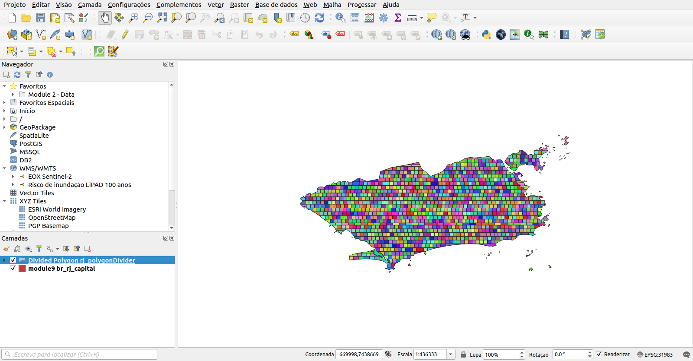
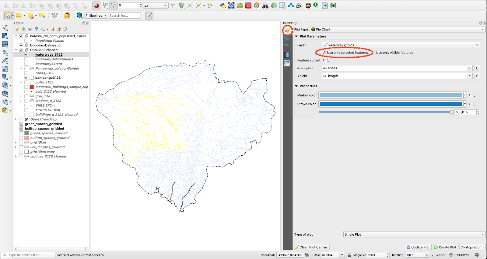

Módulo 10 - Plugins QGIS
Autores: Codrina, Ben Hur
Introdução Pedagógica
Este módulo irá destacar alguns dos plugins mais interessantes e úteis que a comunidade internacional QGIS desenvolveu e disponibilizou para todos usarem. Neste módulo, você irá:
Adquirir as seguintes habilidades:
- Como pesquisar e instalar um novo plugin
- Como alternar entre os diferentes repositórios de plugins
- Como ler a documentação de um plugin e como pesquisar.
- Detalhes sobre algumas das funcionalidades de plugins mais populares.
Ferramentas e recursos necessários
- Este módulo foi preparado usando QGIS versão 3.16.1 - Hannover
Pré-requisitos:
- Conhecimento básico de operação um computador
- Uma compreensão robusta de todos os módulos, pois os plugins que apresentaremos se aplicam a várias noções / elementos que você aprendeu ao longo deste currículo, como vetores, rasters, tabelas de atributos, regras cartográficas e muitos outros.
Conteúdo principal
Fase 1: Introdução à mentalidade do plugin
Uma das muitas vantagens da comunidade de código aberto - composta por desenvolvedores e usuários - é a incrível velocidade com que os desenvolvimentos e melhorias acontecem, e a maneira como novas ideias surgem e são colocadas em prática.
Como você viu no módulo 1, o QGIS é projetado com uma arquitetura de ‘plugin’ (ou complemento), permitindo que ele seja facilmente personalizado para as necessidades do usuário adicionando plugins externos. Na verdade, QGIS é a combinação de plugins principais (core) e externos. Os plugins principais - como o nome sugere - formam a estrutura principal, são mantidos pela Equipe de Desenvolvimento do QGIS e estão sempre incluídos na instalação, como por exemplo o plugin de núcleo de processamento, as estatísticas de zona ou o gerenciador de plugins. Com o tempo, devido à sua relevância, diferentes plugins externos passaram a ser principais.
É claro que, dados os princípios do código aberto, juntamente com a grande e muito detalhada documentação disponível e os muitos canais de comunicação e eventos dedicados, é possível aprender a construir um plugin que atenda aos seus requisitos. E esse seria um um plugin externo. Nesta página da web, você pode encontrar toda a documentação necessária. A maioria dos plugins externos são escritos em Python, mas também podem ser escritos em C ++.
Nesta primeira fase, vamos explorar a configuração dos plugins QGIS - como procurar um plugin para resolver um requisito específico que alguém possa ter, como interpretar sua documentação e como relatar ao desenvolvedor se você encontrar um problema.
O gerenciador de plugins
O QGIS oferece um plugin principal para permitir aos usuários gerenciar, instalar, atualizar e desinstalar plugins externos. A funcionalidade é intuitiva, fornecendo acesso total ao repositório público oficial de plugins.
Deve ser destacado que os plugins externos - sejam oficiais ou experimentais - são o trabalho de desenvolvedores individuais ou organizações e a organização QGIS não se responsabiliza por eles. Dito isso, existem algumas regras que os desenvolvedores que desejam compartilhar seu trabalho através do repositório oficial devem cumprir, bem como uma série de recomendações para uma rápida aceitação. Os requisitos incluem elementos como licença compatível, documentação mínima, identificação clara de dependências e outros. As recomendações incluem verificar se o plugin não duplica funcionalidades existentes, bom formato do repositório fonte, compatível com todas as plataformas (Windows, Linux, macOS) e muitas outras.
Plug-ins experimentais - que são rotulados como tal no gerenciador de plugins - são plugins que estão em estágios iniciais de desenvolvimento, que não são adequados para uso operacional. Eles são considerados como testes de “prova de conceito” e os usuários não são aconselhados a instalá-los, a menos que pretendam usá-los para fins de teste.
Para ver os plugins experimentais, o usuário deve habilitá-los. Assim, nas configurações do gerenciador de plugins, marque a opção Mostrar também plugins experimentais (Figura 10.2a). Também existe a possibilidade de listar os plugins obsoletos. Eles não são recomendados porque não são mais mantidos.
Os dois tipos são bem diferenciados no gerenciador de plugins (consulte as figuras 10.1 e 10.2b).

Figura 10.1 - Plugin oficial do gerenciador

Figura 10.2a - Exibir plugins experimentais

Figura 10.2b - Plugin experimental do plugin Manager
Outro aspecto que vale a pena mencionar é que o gerenciador de plugins é uma funcionalidade bastante versátil que permite aos desenvolvedores adicionar seus repositórios privados (veja a figura 10.3).

Figura 10.3 - Adicionar repositório de plugins privado ao seu QGIS
Isso é útil, se por exemplo, dentro de sua organização há necessidade de mais plugins, mas que não estão em conformidade com QGIS requisitos para hospedagem pública em seu repositório oficial. Um recurso útil sobre como configurar seu próprio repositório de plugins está disponível em GIS OPS
O método mais simples é preparar um pacote zip contendo um plugin e que pode ser compartilhado por meios tradicionais. No entanto, esse método não é recomendado.
Além de Configurações, pode-se ter notado que existem várias outras guias do lado esquerdo, com nomes que são autoexplicativos: Todos, Instalado, Não instalado, Novo, Inválido, Instalar do ZIP e, como mencionado, Configurações.
Depois de decidir quais tipos de plugins listar em seu gerenciador, pode-se alternar para a guia Todos e vamos investigar como um plugin aparece no Gerenciador de plugins. Para fins de demonstração, pesquise o plugin Cartographic Line Generalization.
Como você notou, o Gerenciador de Plug-ins possui uma barra de pesquisa disponível - aqui é onde se pode digitar uma ou mais palavras-chave adequadas para um requisito específico. No nosso caso, a palavra-chave é ‘cartographic’.

Figura 10.4 - Buscando um plugin específico no Gerenciador de Plugins
Como se pode notar, do lado direito há uma janela apresentando um conjunto de elementos de documentação. Você perceberá que estes são padronizados e cada plugin deve ter as mesmas informações disponibilizadas, da mesma forma.
A exibição de metadados para cada plugin é a seguinte:
- Nome do plugin e subtítulo descrevendo suas capacidades;
- Seção de descrição - dependendo do desenvolvedor, esta seção pode ser mais ou menos detalhada;
- O número de downloads e quantas estrelas o plugin recebeu da comunidade;
- As palavras-chave escolhidas pelo desenvolvedor;
- Uma série de links muito importantes: a página web do plugin, o bug tracker e o repositório de código
- O nome do(s) desenvolvedor(es), bem como a organização afiliada. Às vezes, o nome do projeto no qual o plugin foi desenvolvido também é listado;
- O número da versão, com a menção estável ou experimental, conforme o caso;
- O ícone do plugin.
Na figura 10.5, todos os elementos de metadados mencionados são identificados.

Figura 10.5 - Documentação de um plugin
No canto inferior esquerdo está disponível o botão Instalar plugin. Ao ativá-lo, o plugin escolhido será instalado em seu QGIS e um novo ícone ou menu será adicionado à sua interface QGIS.
É importante mencionar que normalmente, devido a limitações de espaço, a descrição disponível no gerenciador de plugins não é extensa. Assim, para melhor entender se o plugin escolhido atende aos requisitos, é necessário acessar a sua página inicial. No nosso caso, observamos que a página inicial é idêntica ao repositório de código - no Gitlab, - mas isso nem sempre é o caso (veja a figura 10.6).

Figura 10.6a - Página inicial do plugin selecionado

Figura 10.6b - Metadados detalhados na página inicial do plugin
Outro aspecto muito importante a destacar em relação à documentação de um plugin é o link web do bug tracker. Um sistema rastreador de bugs é um aplicativo de software que rastreia todos os problemas de software relatados (também conhecidos como bugs). Em nosso caso, o bug tracker é suportado pelo repositório de código dedicado Github (veja a figura 10.7).

Figura 10.7 - Sistema de rastreamento de bug no Github para um plugin QGIS
Detalhar como relatar um problema de software no Github excede o escopo deste módulo, no entanto, é importante destacar um alguns aspectos. Em primeiro lugar, o ecossistema de código aberto - seja geoespacial ou não - funciona melhor quando todas as partes envolvidas estão ativas, ou seja, os desenvolvedores programando e os usuários testando e relatando os problemas identificados. Se alguém fizer uma pesquisa rápida nos diferentes rastreadores de bug para QGIS ou GRASS ou outra solução de código aberto, notará uma atividade intensa. E isso é bom, mostra que a comunidade está viva, que a interação entre desenvolvedores e usuários funciona normalmente. Em segundo lugar, antes de abrir um relatório de bug através de muitos canais diferentes, certifique-se de ter pesquisado exaustivamente online por uma solução para o seu problema. Caso contrário, você corre o risco de não ser atendido por não dedicar tempo para fazer seu dever de casa.
Perguntas do questionário
- Você precisa do nome completo do plugin para encontrá-lo no Gerenciador de plugins?
- Não, uma palavra-chave é suficiente.
- Sim.
- Os plugins oficiais e experimentais estão disponíveis no mesmo repositório?
- Sim, desde que a opção ‘Mostrar os plugins experimentais’ no Plug-in do gerenciador esteja selecionada.
- Não, para experimental existem outros repositórios.
- Cite 2 ou 3 informações que um usuário pode encontrar na documentação de um plugin:
- Título e descrição, número de downloads, página inicial, links do repositório de código, nome do desenvolvedor, uma descrição resumida.
Fase 2: Alguns plugins interresantes
Plugins podem ser classificados em várias categorias, dependendo do que se considera importante. A seguir, identificamos os 2:
- Pelo nível de desenvolvimento:
- Oficial - o plugin é considerado estável, bem documentado e pode ser usado em produção;
- Experimental - o plugin está em estágio inicial de desenvolvimento, é recomendado apenas para fins de teste;
- Obsoleto - o plugin não é mais mantido, ou seja, não será atualizado para versões mais recentes, o desenvolvedor pode não responder ao relatório de bug, para ser usado apenas se não houver outra maneira de resolver o problema em questão.
- Por tipo de categoria:
- Vetor;
- Raster;
- Rede;
- Base de dados;
- Cartografia.
Deve-se notar que alguns plugins externos agem como pontes que permitem o acesso através do QGIS a bancos de dados externos, nuvens, serviços, nesse caso, elementos adicionais podem ser necessários - como uma conta paga para o serviço externo, nuvem ou uma chave de API. Um exemplo para ilustrar isso é o plugin Planet Explorer da Planet Inc. (veja a figura 10.8).

Figura 10.8 - Exemplo de um plugin que requer assinatura externa para funcionar no QGIS em sua capacidade total
Embora na descrição não haja nenhuma menção sobre isso, vá para a página inicial do plugin e veja os requisitos para seu funcionamento: “Assinatura ou teste do Planet para acessar e baixar imagens do Planet. Não tem uma assinatura? Entre em contato com nossa equipe para saber mais.”
Nas páginas a seguir, identificaremos e forneceremos exemplos curto de alguns plugins que consideramos úteis. Por favor, tenha em mente que esta é uma pequena lista do extenso universo de plugins, então fique à vontade para explorar mais.
Discovery

Figura 10.9a - O plugin
Discovery é um plugin muito útil que permite pesquisar texto armazenado nos atributos de seus vetores. O plugin se conecta a um banco de dados PostgreSQL / PostGIS, MS SQL Server, ou um arquivo de geopackage e procura por texto nas colunas indicadas. Ele permite auto-completar e também oferece suporte para escalas com base em expressões flexíveis.
Para testá-lo, usaremos um arquivo de geopackage preparado por The Humanitarian Data Exchange e disponível para download. É um arquivo vetorial contendo os lugares povoados das Filipinas, junto com os nomes e número de pessoas. Os dados brutos foram baixados do OpenStreetMap.
Depois de usar o gerenciador de plugins para instalar o Discovery, uma nova barra de ferramentas deve estar visível em seu QGIS. Vamos configurar os parâmetros: Tipo de fonte de dados: geopackage, nome: Filipinas, escolha o arquivo de acordo e a camada será Populated Places (Locais Povoados), a coluna de pesquisa: nome. Também solicitaremos informações adicionais a serem exibidas na barra de pesquisa: is_in e population. Na nossa situação, se houver mais povoados com o mesmo nome, mas em províncias diferentes, seremos capazes de diferenciá-las. Sua configuração do Discovery deve ser semelhante à figura 10.9b.

Figura 10.9b - Configurando o plugin Discovery
Clique em OK e vamos procurar por “San Roque” na barra de pesquisa (ver figura 10.9c).

Figura 10.9c - Usando o Discovery para pesquisar rapidamente os atributos das camadas vetoriais.
Em nosso exemplo, podemos ver que há muitos lugares povoados de San Roque nas Filipinas, escolhendo uma entrada nesta lista e o QGIS irá ampliá-la (consulte a figura 10.9d).

Figura 10.9d - Ampliação da geometria do elemento selecionado na barra de pesquisa.
O plugin oferece a possibilidade de encontrar vetores por pesquisa de texto juntamente com vários filtros, como uma caixa delimitadora ou várias consultas SQL.
Para uma descrição detalhada dos recursos do plugin, junto com um tutorial mais abrangente, verifique o plugin Discovery página da web.
Polygon Divider

Figura 10.10a - O plugin
Polygon Divider Polygon Divider é outro plugin QGIS útil que ajuda o usuário a dividir de forma eficiente polígonos em ‘aproximadamente quadrados’ de um tamanho definido, a partir de uma camada vetorial do tipo polígono.
Essa ferramenta pode ser útil para uma infinidade de aplicações, como parcelamento de terras, amostragem ambiental e assim por diante.
Vamos usar esta ferramenta no conjunto de dados dos limites do Rio de Janeiro e ver quais resultados obtemos.
Usando o gerenciador de plugins, instale o Polygon Divider. Após a conclusão, um novo ícone aparecerá na barra de ferramentas QGIS e uma nova janela será aberta (consulte a figura 10.10b).

Figura 10.10b - Janela do plugin do divisor de polígono
Escolha como camada de entrada a camada de polígono do Rio de Janeiro, salve o arquivo de saída como rj_polygonDivider, escolha 1000000 (significando que todas as divisões terão cerca de 100 hectares), escolha left to right (da esquerda para a direita) como direção de corte e tolerância 1. O resultado deve ser semelhante à figura 10.10c.

Figura 10.10c - Resultado da execução do plugin Polygon Divider na camada vetorial do Rio
Para uma descrição detalhada dos recursos do plugin, junto com um tutorial mais abrangente, verifique o Polygon Divisor página da web.
Load Them All

Figura 10.11a - O plugin Load Them All
Este é um plugin útil quando você tem múltiplas camadas (vetores e rasters) que você precisa carregar no QGIS. O plugin permite que você carregue tudo automaticamente, de uma vez. Mas a grande vantagem é que ele fornece uma infinidade de filtros, como alfanuméricos (por nome), data de modificação, bounding box (extensão, a partir de coordenadas inseridas manualmente), tipo de geometria e outros.
Para testá-lo, carregaremos os arquivos do módulo anterior 8. Para o vetor, escolheremos os shapefiles que foram processados antes de uma data selecionada, para o raster escolheremos um filtro alfanumérico - o nome do raster carregado deve começar com LandCover (veja a figura 10.11_b).

Figura 10.11b - Configurando os parâmetros do plugin Load Them All (vetores e rasters)
Os parâmetros identificados acima representam um exemplo baseado na estrutura disponível. Você pode alterá-lo da maneira que achar melhor, com base nos arquivos do computador.
Os resultados da execução de Load Them All com os parâmetros acima são apresentados na figura 10.11c (vetores) e 10.11d (rasters).

Figura 10.11c - Usando o plugin Load Them All para carregar vários vetores

Figura 10.11d - Usando o plugin Load Them All para carregar vários rasters
Para obter uma descrição detalhada dos recursos do plugin, junto com um tutorial mais abrangente, verifique a página da web do plugin.
Raster tracer

Figura 10.12a - O plugin Raster tracer
O Raster Tracer pode ser um plugin muito útil quando se digitaliza por sobre um mapa, em outras palavras, extraindo dados na forma de vetores. Esta atividade é geralmente realizada em mapas topográficos antigos digitalizados, dos quais queremos extrair várias informações para armazenar, processar e visualizá-las em um SIG/GIS. Um bom exemplo é a digitalização feita sobre mapas topográficos para extrair curvas de nível para construir em SIG um modelo 3D do relevo.
Embora hoje, com o surgimento de modelos digitais de terreno obtidos a partir de imagens de satélite, isso possa não ser mais um problema, a digitalização ainda é amplamente empregada. O uso mais proeminente é para extrair informações de mapas antigos. Mapas históricos nos oferecem uma janela para o passado, antes de termos satélites para monitorar nossas florestas e mudanças na cobertura do solo. Como esses documentos cartográficos eram originalmente em papel, para poder usar a informação com tecnologia moderna é preciso digitalizá-los.
Usando o Gerenciador de plugins, pesquise e instale o Raster Tracer. Este plugin adiciona ao QGIS uma capacidade semi-automática de traçar características lineares do mapa raster subjacente, clicando em seus pontos de inflexão no mapa raster. Uma vez instalado, um novo ícone deve aparecer na sua barra de ferramentas.
Para usá-lo, precisamos de pelo menos 2 camadas - uma é a camada raster e a outra é a camada vetorial que irá capturar os dados. Identificamos para a província de Pampanga um mapa topográfico, 1: 50k no site oficial da Autoridade Nacional de Mapeamento e Informação de Recursos. Infelizmente, embora eles tenham fornecido acesso ao mapa, ele não é georreferenciado. Para fins de demonstração, continuaremos sem corrigir esse problema, no entanto, observe! Antes de fazer a digitação de vetores de um mapa raster, é fundamental que o último seja georreferenciado corretamente. Caso contrário, o trabalho - que consome muito tempo - será inútil.
Dito isso, traga o mapa topográfico da cidade de Angeles (Camada - Adicionar camada - Adicionar camada raster ..).
A seguir, criaremos uma camada vetorial MultiString onde todos os objetos de linha que extraímos do mapa topográfico serão armazenados (Camada - Criar Camada - Nova camada GeoPackage ..). Crie um vetor MultiLine e salve-o com o nome tracer_lines. Escolha a projeção EPSG: 3123 - a projeção oficial da região. Inicie o modo de edição nele (Clique com o botão direito - Alternar edição).
Clique no ícone Raster Tracer e configure os parâmetros, como na figura 10.12b. Escolha a cor das linhas de contorno usando o seletor de cores que se abre ao clicar na opção Trace color.

Figura 10.12b - Configurando os parâmetros do Raster Tracer
Agora, tudo o que resta fazer é iniciar a digitalização. Depois de verificar se o raster do vetor é editável e se o plugin está ativado clicando mais uma vez sobre ele, clique nos pontos de inflexão da linha de contorno que iremos extrair (ver figura 10.112c).

Figura 10.12c - Clique nos pontos de inflexão para traçar a linha usando Raster Tracer
A figura 10.12d apresenta o resultado.

Figura 10.12d - Linha desenhada semiautomática seguindo a cor indicada.
Active Fire

Figura 10.13a O plugin Active Fire
Plugins não são apenas projetados para trabalhar com dados que você tem, mas são construídos para também trazer para o QGIS conjuntos de dados que são produzidos por outras instituições, agências, organizações ou qualquer pessoa que os compartilhe por meio de serviços padronizados de mapeamento da web.
Um bom exemplo é o plugin Active Fire. Este foi desenvolvido para permitir que os usuários do QGIS exibam de forma rápida, intuitiva e sem nenhum esforço, os incêndios nas últimas 24h em qualquer região de interesse. Os produtos de incêndio são produzidos pela NASA e disponibilizados gratuitamente para todos. Os dados brutos vêm de 2 satélites: o espectrorradiômetro de imagem de resolução moderada (MODIS) (MCD14DL) e Visible Infrared Imaging Radiometer Suite (VIIRS) 375 m (VNP14IMGTDL_NRT e VJ114IMGTDL_NRT) para as últimas 24h.
Para encontrá-lo, abra o Gerenciador de plugins escreva fire. Após a instalação, um novo ícone vermelho aparecerá na barra de ferramentas QGIS. Ao clicar sobre ele, aparece uma nova janela onde permite selecionar em qual sensor deseja que os pixels de incêndio sejam identificados nas últimas 24 horas (ver figura 10.13b).

Figura 10.13b - Usando o plugin Active Fire para carregar produtos de incêndio da NASA no QGIS
O plugin também calcula o número de pixels de incêndio registrados.
Qgis2web

Figura 10.14a - O plugin qgis2web
Este é um plugin que permite ao usuário exportar rapidamente seu projeto QGIS para um mapa web.
Um mapa web é uma exibição interativa de informações geográficas que pode ser aberta em navegadores (browsers). Interagimos diariamente com essas representações; basta pensar em OpenStreetMap, Google Maps, Waze, Pokémon Go.
Este plugin permite preparar e exportar rapidamente um mapa para a Internet, através das tecnologias web de OpenLayer3 ou Leaflet. Qgis2web faz o seu melhor para interpretar um projeto QGIS e exportar HTML, Javascript e CSS para criar um mapa web o mais próximo possível do projeto QGIS.
Após a instalação do plugin qgis2web, um novo ícone aparece na barra de ferramentas QGIS, o mesmo representado no Gerenciador de Plugins. Clique nele para abrir uma janela, como a da figura 10.14b.

Figura 10.14b - Escolhendo o que seu mapa irá mostrar no navegador.
A interface é intuitiva, mas lembre-se de que quanto mais pesados os conjuntos de dados, mais tempo demorará para ser preparado e exportado. Após escolher para onde exportar, clique no botão exportar para finalizar (ver figura 10.14c).

Figura 10.14c - QGIS2web preparando os arquivos e pastas necessários para a tecnologia da web OpenLayer 3
A pasta exportada contém vários arquivos, dependendo de qual tecnologia de mapeamento da web foi selecionada - Leaflet ou Openlayers3 . No caso do OpenLayer3, a pasta escolhida para a exportação contém os seguintes arquivos e pastas: images, index.html, layers, resources, styles, webfonts. Clique duas vezes no arquivo index.html e seu mapa exportado será aberto em seu navegador, onde você pode alternar quais camadas ficarão visíveis (consulte a figura 10.14d).

Figura 10.14d - Abrindo o arquivo index.html em seu navegador
Como você notou, o navegador abre este mapa de sua pasta local (onde você disse ao qgis2web para exportar).
Este plugin QGIS é uma ótima ferramenta para ajudá-lo a preparar seus mapas para a web.
Para uma descrição detalhada dos recursos do plugin, junto com um tutorial mais abrangente, verifique a qgis2web página da web.
DataPlotly

Figura 10.14a - O plugin DataPlotly
O plugin DataPlotly foi desenvolvido especificamente para suportar visualizações interativas de gráficos dos dados vetoriais carregados no QGIS. O plugin é baseado em uma biblioteca Python chamada Plotly, que é bastante poderosa, fornecendo a possibilidade de criar vários gráficos interativos com qualidade para publicação: gráficos de linha, gráficos de dispersão, gráficos de área, gráficos de barras, barras de erro, gráficos boxplot, histogramas, mapas de calor, subplots, eixos múltiplos, gráficos polares e gráficos de bolhas. Mais informações sobre esta biblioteca Python estão disponíveis no site oficial.
Instale o plugin usando o gerenciador de plugins e carregue algumas camadas vetoriais para visualizar:
- Waterways_3123 (tipo de linha);
- Locais povoados (tipo de ponto);
Vamos preparar um gráfico interativo mostrando quantos rios vs. canais vs. riachos vs. segmentos de drenagem que temos em nosso conjunto de dados.
Ao clicar no ícone específico, uma nova janela será aberta, consulte a figura 10.24.

Figura 10.15b - Janela / painel do DataPlotly.
A seguir, configure os parâmetros, como na figura 10.15c.

Figura 10.15c - Configurando os parâmetros para o gráfico de pizza que representa os tipos de linhas de água
Escolha waterways_3123 como a camada vetorial da qual extrair os dados plotados, campo de agrupamento - fclass, Campo Y - comprimento. Se o comprimento precisar ser calculado, vá para a tabela de atributos da camada vetorial e escreva no campo calculadora round($length). Para mais detalhes, consulte o módulo 8. Em seguida, selecione ‘single plot’ no tipo ploty e clique no botão Criar plotagem, no lado inferior direito. Seu resultado deve ser semelhante à figura 10.15d.

Figura 10.15d - Tipos de vias navegáveis por gráfico circular de comprimento.
Ao passar o mouse sobre cada segmento do gráfico de pizza, um pop-up aparece mostrando o nome (retirado da coluna fclass), a soma dos comprimentos e a porcentagem do total.
Uma funcionalidade significativa do DataPlotly é a conexão com a tela do mapa QGIS. Para entender o que é isso, clique em uma das seções do gráfico de pizza. Você deve ver que alguns recursos são selecionados automaticamente na tela do mapa (consulte a figura 10.15e).

Figura 10.15e - Teste de conexão interativa da tela do mapa DataPlotly e QGIS
Isso também significa que você pode atualizar interativamente seu gráfico, por exemplo, para mostrar apenas os recursos selecionados. Para testar, selecione apenas uma parte dos cursos d’água na tela do mapa, vá para o DataPlotly, primeira guia e nos parâmetros do gráfico, marque a opção ‘only selected features’ (consulte a figura 10.15f).

Figura 10.15f - Atualizar interativamente o gráfico para mostrar apenas os recursos selecionados.
Em seguida, clique no botão Atualizar gráfico no canto inferior direito da janela DataPlotly. Os resultados devem ser semelhantes aos da figura 10.29 (apenas aproximadamente, porque sua seleção provavelmente difere daquela mostrada na figura 10.15g).

Figura 10.15g - Atualize o gráfico para mostrar apenas os recursos selecionados na tela do mapa.
Além disso, o DataPlotly fornece ao usuário uma função de exportação - em um arquivo .pdf ou .html. Os botões correspondentes estão na parte inferior direita da janela DataPlotly, consulte a figura 10.15h.

Figura 10.15h - Recursos de exportação do DataPlotly
Exportar como arquivo HTML permite ao usuário preparar uma ampla variedade de gráficos de dados prontos para publicação na web (consulte a figura 10.15i).

Figura 10.15i - Usando um navegador para abrir o arquivo HTML exportado pelo DataPlotly.
O plugin também é muito bem documentado. Ele fornece um menu de ajuda para cada tipo de plotagem. Você pode acessá-lo clicando na quarta aba do DataPlotly (veja a figura 10.15j).

Figura 10.15j - Menu de ajuda para cada tipo de plotagem acessível através da janela do plugin.
Devido ao link direto e interativo com os conjuntos de dados carregados do QGIS, as expressões também podem ser usadas ao preparar um gráfico. Para testar essa capacidade, criaremos uma base de plotagem na camada vetorial Locais povoados. Defina os seguintes parâmetros: tipo: gráfico de barras, camada: locais povoados, X_field: is_in, Y_field - abra a calculadora de campo e insira "population" is not null (consulte a figura 10.15k e a figura 10.15l).

Figura 10.15k - Abrindo o editor de campo no DataPlotly com base nos atributos da camada QGIS selecionada para aplicar uma expressão para filtrar o que o gráfico exibirá

Figura 10.15l - Inserindo uma expressão na calculadora de campo
O resultado deve ser semelhante ao da figura 10.35.

Figura 10.15m - Resultado do DataPlotly da filtragem por expressão
Se formos interpretar este gráfico, ele nos mostra que entre todas as províncias onde existem lugares povoados, o atributo população é diferente de 0 em apenas 3 regiões, Alaminos, Sual, Pangasian e Bagac. Pode-se testar facilmente essa conclusão examinando a tabela de atributos.
O DataPlotly também oferece ao usuário a possibilidade de criar subplots, o que significa que vários gráficos podem ser exibidas em uma única figura.
Para testar essa funcionalidade, usaremos a camada vetorial de locais de população. Temos os seguintes atributos de interesse: place = tipo de lugar (cidade, vila, vila, etc., is_in = nome da província a que pertence (se conhecido), population = (números da população) e name = o nome do lugar (se conhecido). Vamos integrar na mesma figura, 2 gráficos de dados: um para nos mostrar quantos dos lugares povoados se enquadram em cada categoria de place e o segundo, como é a população dividida pelos 4 tipos de places.

Figura 10.15n - Configurando os parâmetros para o primeiro lote - tipos de assentamentos por seus números.

Figura 10.15o - Configuração dos parâmetros para a segunda parcela - tipos de assentamentos por número de população.

Figura 10.15p - Subplots em uma linha
Para uma descrição detalhada dos recursos do plugin, junto com um tutorial mais abrangente, verifique o DataPlotly webpage.
Plugin QuickMapServices / OpenLayers


Figura 10.16a - plugin QuickMapServices; 10.16b - Plug-in OpenLayers
Estes 2 plugins são excepcionalmente úteis quando um usuário precisa adicionar mapas base ao seu projeto QGIS. Por exemplo, deseja-se ver no contexto o posicionamento de uma nova camada vetorial recebida, ou talvez apenas preparar uma representação cartográfica mais atrativa para um relatório. Para qualquer um desses objetivos, os QuickMapServices permite carregar camadas de mapa base de diferentes fornecedores, como OpenStreetMap, NASA, Bing ou Google Maps, em apenas 2 cliques.
Instale os dois plugins usando o Gerenciador de plugins. Nesse caso, você notará que eles aparecerão na guia Web (consulte a figura 10.16b).

Figura 10.16b - Localização dos plugins QuickMapServices e OpenLayers.
Usá-los é bastante simples, basta clicar na camada que deseja trazer para a tela do mapa e o plugin fará todo o trabalho. Este plugin requer uma boa ligação à Internet, uma vez que utiliza dados disponibilizados pelos seus fornecedores através de serviços de mapeamento web.
A Figura 10.16c apresenta o OSM Standard trazido como um mapa base para o Rio de Janeiro.

Figura 10.16c - Usando o plugin OpenLayers.
A Figura 10.16d ilustra o alinhamento perfeito do mapa base carregado na tela do mapa QGIS usando o plugin OpenLayers. Mesmo que as 2 camadas não estejam na mesma projeção, o QGIS permite a projeção em tempo real, portanto, a sobreposição é possível.

Figura 10.16d - Dados vetoriais carregados (estradas) sobrepostos ao mapa OSM Standard
Para uma descrição detalhada dos recursos dos plugins, juntamente com um tutorial mais abrangente, verifique seus página da web: QuickMapServices e OpenLayer Plugin.
Table2Style

Figura 10.17a - O plugin Table to Style
Este plugin é útil para situações onde existem valores específicos para pixels dentro de uma camada raster que correspondem perfeitamente a uma cor específica. Neste currículo, encontramos esse exemplo, ao trabalhar com os dados de cobertura da terra (ver figura 10.17b).

Figura 10.17b - Exemplos de situações em que os valores dos pixels correspondem a uma cor exata
Do fornecedor deste produto com base em imagens de satélite, os valores dos pixels e as cores associadas também são disponibilizados :
| Valor | Cor | Descrição </ td> </tr> |
| 0 | # 282828 | Desconhecido. Nenhum ou nenhum dado de satélite disponível. |
| 20 | # FFBB22 | Arbustos. Plantas lenhosas perenes com caules persistentes e lenhosos e sem caule principal definido com menos de 5 m de altura. A folhagem do arbusto pode ser perene ou caduca. |
| 30 | # FFFF4C | Vegetação herbácea. Plantas sem caule persistente ou brotos acima do solo e sem estrutura firme definida. A cobertura de árvores e arbustos é inferior a 10%. |
| 40 | # F096FF | Vegetação / agricultura cultivada e manejada. Terras cobertas com culturas temporárias seguidas de colheita e um período de solo nu (por exemplo, sistemas de cultivo único e múltiplo) Observe que as culturas lenhosas perenes serão classificadas como o tipo apropriado de cobertura de terra de floresta ou arbusto. |
| 50 | # FA0000 | Urbano / edificado. Terreno coberto por edifícios e outras estruturas feitas pelo homem. |
| 60 | # B4B4B4 | Vegetação nua / esparsa. Terras com solo, areia ou rochas expostas e nunca apresentam mais de 10% de cobertura vegetal em qualquer época do ano. |
| 70 | # F0F0F0 | Neve e gelo. Terras cobertas de neve ou gelo ao longo do ano. |
| 80 | # 0032C8 | Corpos d'água permanentes. Lagos, reservatórios e rios. Podem ser corpos de água doce ou salgada. |
| 90 | # 0096A0Pantanal | herbáceo. Terras com mistura permanente de água e vegetação herbácea ou lenhosa. A vegetação pode estar presente em água salgada, salobra ou doce. |
| 100 | # FAE6A0 | Musgo e líquen. |
| 111 | # 58481F | Floresta fechada, folha de agulha perene. Copa das árvores> 70%, quase todas as árvores de folhas agulhas permanecem verdes o ano todo. O dossel nunca está sem folhagem verde. |
| 112 | # 009900 | Floresta fechada, folha larga perene. Copa das árvores> 70%, quase todas as árvores de folha larga permanecem verdes durante todo o ano. O dossel nunca está sem folhagem verde. |
| 113 | # 70663E | Floresta fechada, folha de agulha decídua. O dossel das árvores> 70% consiste em comunidades de árvores de folhas agulhas sazonais com um ciclo anual de períodos de folhagem e folhagem. |
| 114 | # 00CC00 | Floresta fechada, folha larga decídua. O dossel das árvores> 70% consiste em comunidades sazonais de folhas largas com um ciclo anual de períodos de folhagem e folhagem. |
| 115 | # 4E751F | Floresta fechada, mista. |
| 116 | # 007800 | Floresta fechada, não correspondendo a nenhuma das outras definições. |
| 121 | # 666000 | Floresta aberta, folha de agulha perene. Camada superior - árvores 15-70% e segunda camada - mistura de arbustos e pastagens, quase todas as árvores de folhas agulhas permanecem verdes durante todo o ano. O dossel nunca está sem folhagem verde. |
| 122 | # 8DB400 | Floresta aberta, folha larga perene. Camada superior - árvores 15-70% e segunda camada - mistura de arbustos e pastagens, quase todas as árvores de folha larga permanecem verdes durante todo o ano. O dossel nunca está sem folhagem verde. |
| 123 | # 8D7400 | Floresta aberta, folha de agulha decídua. Camada superior - árvores 15-70% e segunda camada - mista de arbustos e pastagens, consiste em comunidades sazonais de árvores de folhas agulhas com um ciclo anual de períodos de folhagem e folhagem. |
| 124 | # A0DC00 | Floresta aberta, folha caduca de folha larga. Camada superior - árvores 15-70% e segunda camada - mistura de arbustos e pastagens, consiste em comunidades sazonais de árvores de folha larga com um ciclo anual de períodos de folhagem e folhagem. |
| 125 | # 929900 | Floresta aberta, mista. |
| 126 | # 648C00 | Floresta aberta, não correspondendo a nenhuma das outras definições. |
| 200 | # 000080 | Oceanos, mares. Podem ser corpos de água doce ou salgada. |